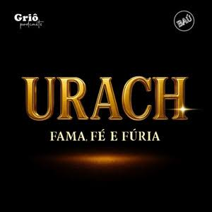

Proyecto
Baú Explica + Griô Podcasts
Urach: fama, fe y furia
Podcast narrativo sobre fama, medios, moral pública y cultura digital basado en la trayectoria de Andressa Urach. Actuando como director, presentador y guionista, con banda sonora original.
Socios: Baú explica, Griô Podcasts

Detalles
- Actuación
- Dirección, presentación, guión, investigación narrativa, gestión editorial y banda sonora original.
- Rango
- 100 mil reproducciones y 10 millones de visualizaciones de contenidos relacionados al proyecto.
- Reconocimiento
- Seleccionado en el Pitching Talent Rio2C 2026, en la categoría Podcast.